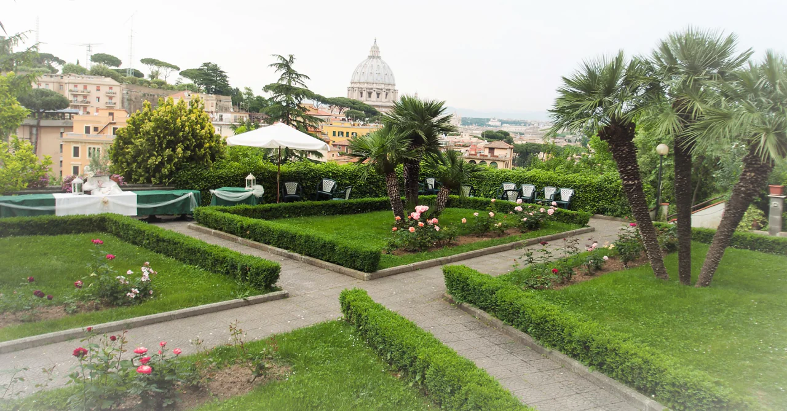

Welcome
The Sisters of St Joseph of the Apparition are a missionary Congregation founded by St Emilie De Vialar in Gaillac, France in 1832. Today the Sisters are present in twenty-four countries.
Read about the Congregation“Go with what you have and will receive, do all the good you can.”
St. Emilie de Vialar
Explore
Who we are Congregation, foundress, charism Where we are Present in twenty-four countries What we do Education, health care, social work Formation Stages, ongoing formation, lay associates Contact Write to the GeneralateLatest news
August 2026
Vocations Awareness Week, Western Australia
June 2026
Bulletin no. 12 available for download